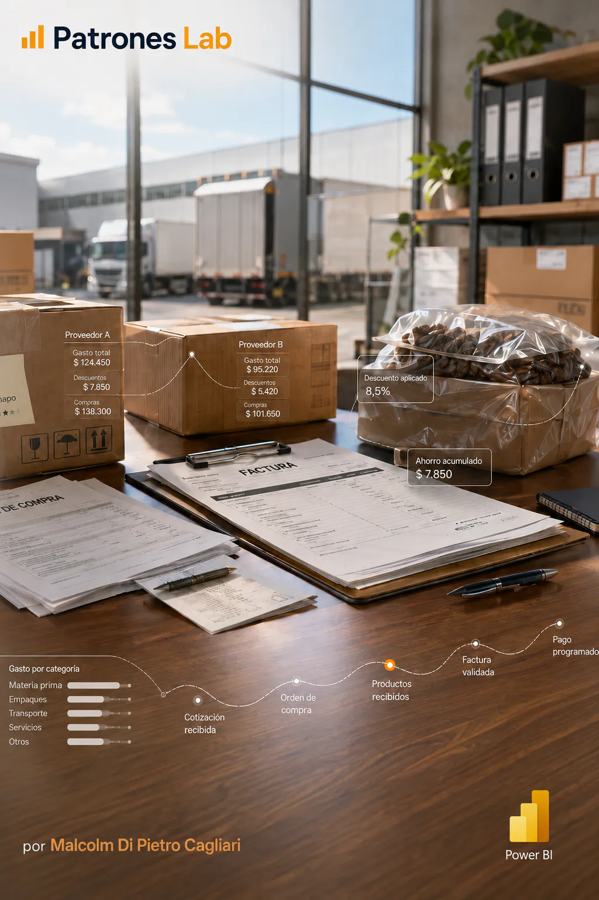

BUSINESS INTELLIGENCE · PROJECT 13

Project 14 · Power BI-dashboard
Power BI-dashboard · Uitgavenanalyse
Managementrapport in Power BI voor het analyseren van leveranciersuitgaven, de maandelijkse ontwikkeling van inkopen, benutting van kortingen en de verdeling per land, categorie en leveranciersniveau.
CONTEXT EN DOEL
Het project gebruikt inkoopgegevens om te analyseren hoeveel is uitgegeven, hoe uitgaven van maand tot maand veranderen en bij welke leveranciers, artikelen en categorieën ze zich concentreren. Elke factuur identificeert een inkoop; de factuurregels tonen de opgenomen artikelen en bedragen. Daarmee kunnen zowel totale uitgaven als de producten waaruit die bestaan worden onderzocht.
Ook worden gegevens per leverancier, locaties, datums en vastgelegde handelsvoorwaarden opgenomen, zoals kortingen en betalingstermijnen. In Power BI worden deze tabellen gekoppeld, zodat dezelfde inkoop vanuit verschillende perspectieven kan worden geanalyseerd. Het model bevat daarnaast valuta- en wisselkoersinformatie, die context aan de transacties geeft.
Op basis daarvan is een dashboard gebouwd met een navigatiestartpagina en twee analysepagina's. "Uitgaventrends en -verdeling" laat zien hoe uitgaven in de tijd veranderen en zijn verdeeld over artikelen, leveranciers en locaties. "Kortingen per leverancier" maakt het mogelijk kortingsvoorwaarden en besparingen bij inkopen te onderzoeken.
MODEL EN EERSTE ANALYSE
Relationeel model en DAX-indicatoren
Voor het model is elke factuur gekoppeld aan haar factuurregels en aan tabellen met leveranciers, artikelen, locaties en datums. Dankzij deze relaties toont het rapport bij selectie van een leverancier of categorie alleen de bijbehorende transacties. De kalendertabel ordent datums in maanden en perioden en maakt vergelijkingen in de tijd mogelijk.
Vanuit dit model zijn DAX-meetwaarden gemaakt: berekeningen die Power BI opnieuw uitvoert op basis van de gekozen filters. Voorbeelden zijn de totale uitgaven (Total Invoice), het aantal facturen (Invoice Count), uitgaven waarop korting van toepassing is (Spend with Discount) en kortingsbesparingen (Discount Savings). Ook kortingspercentages en betalingstermijnen worden berekend. Elke indicator belicht een ander aspect van inkopen en de voorwaarden die met leveranciers zijn afgesproken.
Om de maandelijkse ontwikkeling te volgen, worden de uitgaven van elke maand met die van de vorige maand vergeleken. Eén meetwaarde haalt het bedrag van de vorige periode op (Total Invoice Prev Month); een andere berekent de procentuele stijging of daling (Total Invoice MoM %). De kalendertabel zorgt dat gelijkwaardige perioden worden vergeleken.
DAX-VOORBEELD · UITGAVEN VAN DE VORIGE MAAND
Total Invoice Prev Month = CALCULATE([Total Invoice], DATEADD('Calendar'[Date], -1, MONTH))In dit voorbeeld evalueert CALCULATE de totale uitgaven voor de vorige maand en verschuift DATEADD de onderzochte datums met één maand. Het is een didactische reconstructie van de berekening, geen geverifieerde transcriptie van de oorspronkelijke meetwaarde uit het PBIX-bestand.
Uitgaventrends en -verdeling
De pagina "Uitgaventrends en -verdeling" toont algemene indicatoren voor het totale inkoopbedrag, het aantal geregistreerde facturen, het deel van de uitgaven waarop korting van toepassing is en de besparingen die uit de data blijken. Een grafiek toont de maandelijkse ontwikkeling en maakt vergelijking van perioden mogelijk om stijgingen, dalingen en veranderingen in de uitgavensamenstelling te herkennen.
DAX-VOORBEELD · MAANDELIJKSE UITGAVENVERANDERING
Total Invoice MoM % = DIVIDE([Total Invoice] - [Total Invoice Prev Month], [Total Invoice Prev Month])De formule vergelijkt de uitgaven van de huidige maand met die van de vorige. Eerst wordt het verschil berekend en vervolgens gedeeld door de uitgaven van de vorige periode om de procentuele verandering te vinden. DIVIDE handelt die deling gecontroleerd af wanneer de vorige waarde nul of niet beschikbaar is. De uitdrukking is illustratief en moet worden vergeleken met de oorspronkelijke DAX in het PBIX-bestand.
Dezelfde pagina splitst uitgaven uit naar categorieën, subcategorieën en artikelen. Daarnaast worden landen, steden en leveranciersniveaus vergeleken en wordt een kaart van de geografische spreiding getoond. Met filters is bijvoorbeeld zichtbaar hoe het aandeel van elke categorie verandert wanneer een periode of groep leveranciers wordt geselecteerd.
Kortingen en voorwaarden per leverancier
De pagina "Kortingen per leverancier" richt zich op de handelsvoorwaarden van inkopen. Ze toont kortingspercentages, de termijn om daarvoor in aanmerking te komen en betalingstermijnen, naast twee verschillende bedragen: uitgaven waarop korting van toepassing is en de besparing die uit de records wordt berekend. Samen maken deze cijfers een vergelijking mogelijk tussen inkoopvolume en de voorwaarden per leverancier.
De grafieken vergelijken leveranciers naar niveau en laten zien hoe besparingen per maand veranderen. Ook bundelen ze informatie over uitgaven en kortingen per stad. Om locaties beter te kunnen vergelijken, bevat het rapport een ranglijst van steden op basis van de uitgaven binnen de actuele selectie.
DAX-VOORBEELD · UITGAVENRANGLIJST PER STAD
City Spend Rank = RANKX(ALLSELECTED('Vendor'[Vendor City]), [Total Invoice], , DESC, DENSE)RANKX kent elke stad een positie toe op basis van haar uitgaven. ALLSELECTED gebruikt de steden binnen de actieve filters als referentie, zodat de rangschikking verandert wanneer de gebruiker de selectie aanpast. Dit is een toelichtend voorbeeld van de ranglijstlogica, geen geverifieerde kopie van de DAX-uitdrukking in het PBIX-bestand.
Met slicers kunnen datums, leveranciers of niveaus worden gekozen om indicatoren met dezelfde selectiecriteria te bekijken. Het kortingspercentage drukt een handelsvoorwaarde uit; uitgaven waarop korting van toepassing is tonen de betrokken inkoopbedragen; de besparing is een andere meetwaarde in het rapport. Door deze afzonderlijk te tonen, worden hun verschillen duidelijker.
OPLEVERING EN INZICHTEN
Het resultaat is een Power BI-dashboard met een startpagina en twee interactieve pagina's. De eerste volgt de ontwikkeling en verdeling van uitgaven; de tweede bundelt indicatoren voor kortingen en betalingsvoorwaarden per leverancier. Op beide pagina's worden kaarten en grafieken bijgewerkt wanneer de geselecteerde periode, categorie of leverancier verandert.
Het model verbindt inkopen met leveranciers, artikelen en datums, zodat rapportfilters alle indicatoren op een consistente manier beïnvloeden. Wanneer nieuwe transacties aan de databronnen worden toegevoegd en het Power BI-model wordt vernieuwd, kan het dashboard bedragen, maandelijkse veranderingen en kortingen met recentere informatie tonen, mits de structuur van de brondata behouden blijft.